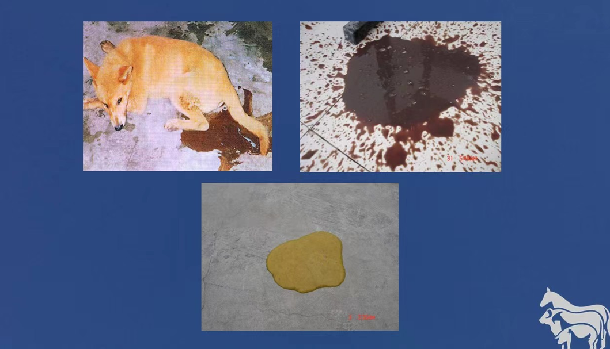
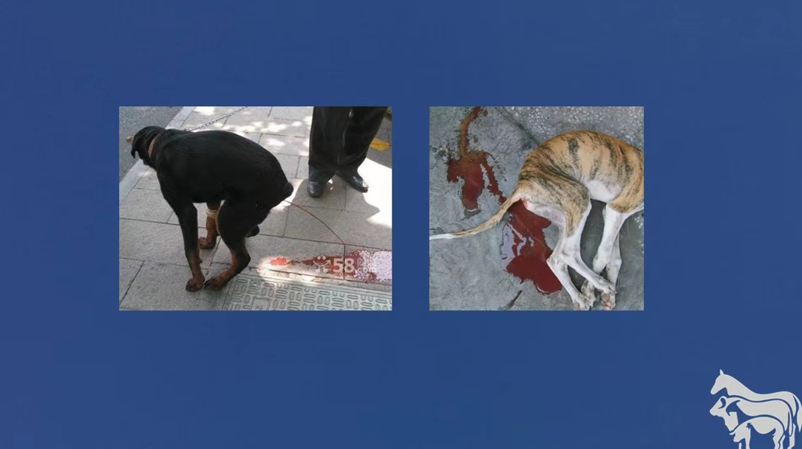

病原:犬瘟热病毒，属于副黏病毒科的麻疹病毒属，病毒粒子多为球形，直径为110～550nm，多数在150～330nm之间，有畸形和长丝状的病毒粒子，带囊膜，囊膜表面密布纤突，具有吸附细胞的作用，病毒的基因组为不分节、非重叠的负链RNA 流行病学：犬瘟热病毒在动物的感染分布于世界各地，在自然条件下，犬瘟热病毒可感染犬，貂，小熊猫，黄鼠狼以及狼等多种犬科，浣熊科动物 症状：潜伏期随机体的免疫状况和所感染病毒的独立与数量而异，一般为3～6天，多数于感染后第四天，体温升高，少数于第五天，极少数于第三天或第六天。多数病例首先表现为上呼吸道感染的症状，体温升高，食欲降低，倦怠，眼鼻流出水样分泌物，并常在1～2天内转变为粘液性脓性；以支气管肺炎和上呼吸道炎症为症状的病犬，鼻镜干裂，呼出恶臭的气体，排出脓性鼻液，严重时将鼻孔堵塞，病犬张口呼吸，并不时以爪挠鼻，眼因脓性结膜炎而分泌出大量脓性分泌物，严重时甚至将上下眼睑粘合到一起，角膜发生溃疡甚至穿孔；以消化道炎症为主的病犬食欲降低或完全丧失呕吐排带粘液的稀便或干粪，严重时排高粱米汤样血便，并且迅速脱水消瘦，与病毒性肠炎病犬症状十分相似 预防：体液免疫主要由中和抗体组成，可中和细胞外游离的犬瘟热病毒，已进入到细胞内的病毒，则需依靠细胞免疫来清除。其中的体液免疫，可通过初乳和胎盘被动传递给新生犬，使其在一定时间内免遭犬瘟热病毒感染。但这种母源性抗体也可干扰幼犬对疫苗的主动免疫，关于犬瘟热的免疫程序，年龄大于三个月的幼犬给予一个剂量的免疫，小于三个月的幼犬应给予两个以上剂量的免疫，每个剂量以两周的间隔，肌肉注射。 治疗：一定要在尽早大剂量使用CD高免血清的同时，还应注意可能随时出现的呼吸道和消化道细菌继发感染，及时注射适当的抗生素，还可使用CD特异转因子与全细胞干扰素进行治疗，对于应出现腹泻脱水的病犬，需补充体液与电解质。对于表现出神经症状的病，且治疗意义不大。症状进一步恶化的，可考虑实行安乐死 |
实例症状 |
|  | |
|  |